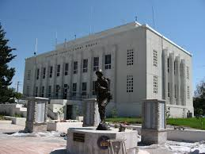

OnSpot Weather.com
Providing current and accurate weather for those who love to explore!
Preston, Idaho
Preston Pancakes in the Park! 9:00 a.m. Saturday at the city park pavilion.
5-day Forecast
| Day | Day 1 | Day 2 | Day 3 | Day 4 | Day 5 |
|---|---|---|---|---|---|
| Forecast | 68 | 63 | 51 | 46 | 44 |
About Preston
Preston Idaho is a small little town located in Franklin, County Idaho. It has a population of a little over 5,000 people. Preston Idaho is famous for its Festival of Lights, which occurs every year from the day after Thanksgiving until December 31.


Contact Information
We would love to hear back from our customers if they have any feedback! Please feel free to call (979)219-0865 for any comments or questions!